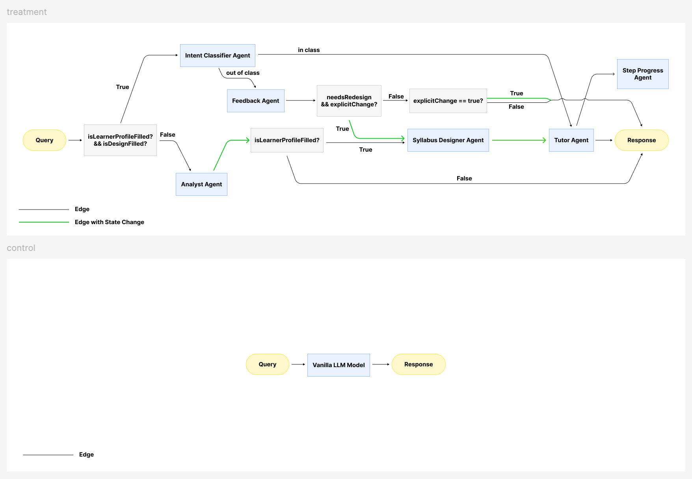

참가자는 배포받은 링크로 웹 브라우저에 접속하여 AI 튜터와 대화하며 학습한다. 설치·회원가입·로그인 절차는 없다. 두 조건의 화면 구성과 조작 방식은 완전히 동일하며, 참가자는 자신이 어느 조건에 배정되었는지 알 수 없다. 아래는 실제 세션에서 수집된 대화 기록이다.
하이루! 만나서 반가워요. 어떤 것을 배우고 싶으신가요?
블록체인에 대해 배우고 싶으시고, 자격증 문제 20개를 맞춰서 합격하는 것이 목표시군요! 혹시 블록체인에 대해 어느 정도 알고 계신가요? (예: 완전 초보, 어느 정도는 앎, 전문가 수준)
좋아요. 필요한 정보를 확인했어요. 학습 순서를 정하고 바로 수업을 시작할게요.
반가워요! 우리 블록체인 자격증 취득을 향한 첫걸음을 즐겁게 시작해 봐요.
첫 번째 단계로 '중앙집중형 시스템'과 '분산 원장 기술(DLT)'의 차이점을 먼저 알아볼게요. 기존의 은행 같은 시스템은 모든 거래 기록을 은행의 중앙 서버 한 곳에만 저장해 두는 중앙집중형 시스템이에요. 반면에 블록체인은 네트워크에 참여하는 모든 사람이 똑같은 거래 장부를 나누어 가지는 분산 원장 기술(DLT)을 사용한답니다. 이렇게 하면 중앙 서버가 해킹당하더라도 다른 사람들의 장부가 안전하게 남아있기 때문에 데이터가 조작되거나 사라지지 않아요.
개념을 잘 이해하셨는지 확인하기 위해 가벼운 질문을 하나 드릴게요.
만약 친구들과 회비를 모을 때 "한 명의 총무에게 장부를 전적으로 맡기는 것"과 "모든 친구가 각자 똑같은 장부를 적어서 서로 비교하는 것" 중, 블록체인의 작동 방식과 더 가까운 것은 무엇일까요?
안녕하세요! 블록체인(Blockchain)에 대해 쉽고 자세히 설명해 드릴게요. 😊
쉽게 말해, 블록체인은 ‘모두가 공동으로 관리하는 디지털 장부(가계부)’입니다.
기존에는 돈을 보내거나 거래할 때 은행 같은 '중앙 기관'이 거래 내역을 기록하고 보증해 주었습니다. 하지만 블록체인 기술을 사용하면 거래 참여자 모두가 동일한 장부 사본을 나누어 가집니다.
새로운 거래가 발생할 때마다 네트워크에 참여한 모든 사람의 장부에 실시간으로 기록되기 때문에, 한 사람이 장부를 조작하거나 해킹하는 것이 사실상 불가능합니다.
이름 그대로 '블록(Block)'과 '체인(Chain)'의 결합입니다.
블록체인은 단순히 '암호화폐'만을 위한 기술이 아닙니다. 매우 다양한 분야에서 활용됩니다.
요약하자면, 블록체인은 "중앙 관리자 없이도 인터넷상에서 서로 신뢰할 수 있게 해주는 혁신적인 보안 기술"이라고 이해하시면 됩니다.
혹시 블록체인의 작동 원리(합의 알고리즘 등), 비트코인과의 차이점, 혹은 스마트 계약 등 더 깊이 알고 싶으신 부분이 있으신가요? 편하게 물어보세요!
